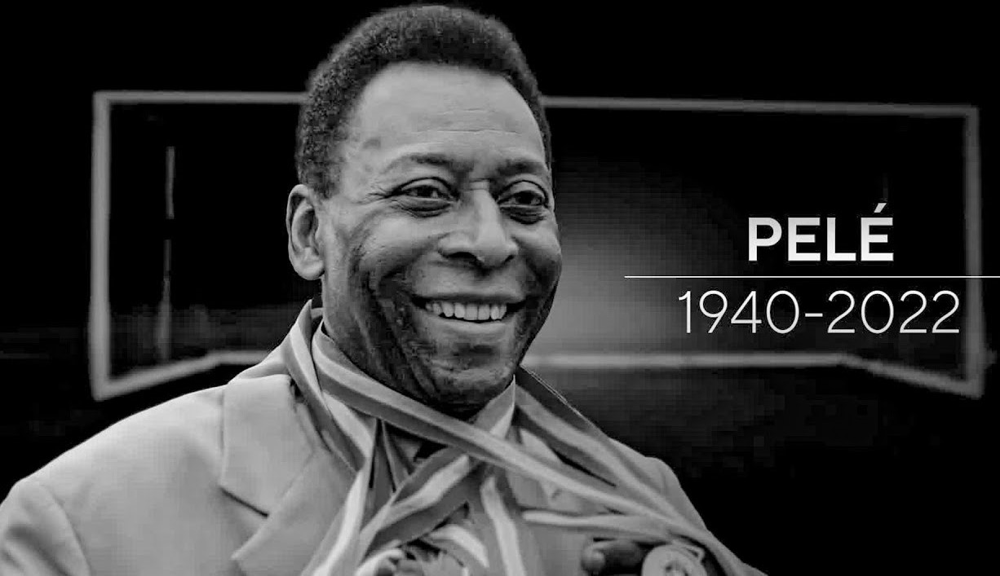

Pelé :
Edson Arantes do Nascimento, popularly known as Pele was a Brazilian professional footballer who played as a forward who played for the Brazil national team and is best known for his time at Santos. Pele is widely considered to be the best football player of his time and of all times. He won three FIFA World Cups and was named the FIFA co-Player of the Century in 1999. Edson Arantes do Nascimento, popularly known as Pele was a Brazilian professional footballer who played as a forward who played for the Brazil national team and is best known for his time at Santos. Pele is widely considered to be the best football player of his time and of all times. He won three FIFA World Cups and was named the FIFA co-Player of the Century in 1999.
Early Life
Pele, was born on October 23, 1940, in Três Corações, Minas Gerais, Brazil. He grew up in poverty and started playing football barefoot on the streets of Bauru, a city in the state of São Paulo. He developed his skills playing for various amateur teams, including Sete de Setembro and Ameriquinha.
Club Career
He made his professional debut for Santos at the age of 16 in 1956 and helped the team win its first Campeonato Paulista, a major state championship in Brazil. In 1958, Pele helped Santos win the Copa Libertadores, the most prestigious club competition in South America, for the first time in their history. He also played a key role in Santos' victory in the Intercontinental Cup that year, scoring both goals in a 2-1 win over AC Milan.
International Career
Pele made his international debut in 1957 at the age of 16 against Argentina in a 1-2 defeat at the Maracana. He scored a goal on his debut to become the youngest to score for Brazil at 16 years and 9 months. He went on to have a highly successful international career, winning three World Cups.
Records
• Most appearances for Santos: 1116
• Most goals within a single Brazilian top-flight league season: 58
• Most goals scored in a single Campeonato Paulista match: 8 (1964)
• Most goals scored in Campeonato Paulista history: 466
• Most seasons as Campeonato Paulista Top Scorer: 11
• Most consecutive seasons as Campeonato Paulista Top Scorer: 9 (1957-1965)
• Most goals in a calendar year (including friendlies, recognized by FIFA): 127 (1959)
• Guinness World Record for most hat-tricks in world football: 92
• Most hat-tricks for Brazil: 7
• Most FIFA World Cup winners' medals: 3 (1958, 1962, 1970)
• First player to score in three successive FIFA World Cups
• Scored in two FIFA World Cup Finals for winning teams (shared with Vavá)
• Most assists provided in FIFA World Cup history: 10 (1958–1970)
• Most assists provided in a single FIFA World Cup tournament: 6 (1970)
• Most assists provided in FIFA World Cup Final matches: 3 (1 in 1958 and 2 in 1970)
Death and Funeral
In 2021, Pelé was diagnosed with colon cancer. He underwent surgery the same month, and afterwards was treated with several rounds of chemotherapy. In early 2022, metastasis were detected in the intestine, lung and liver. On November 29, he was admitted to the Albert Einstein Israelite Hospital in São Paulo due to a respiratory infection after he contracted COVID-19 and for reassessment of the treatment of his colon cancer. On December 3, 2022, it was reported that Pelé had become unresponsive to chemotherapy and that it was replaced with palliative care.
Pelé died on 29 December 2022, at 3:27 pm, at the age of 82, due to multiple organ failure, a complication of colon cancer.